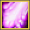
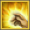
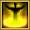
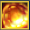

Build Priest
(obs. na build só será mostrada as habilidades que serão melhoradas, as outras habilidades que não aparecem na build sempre ficarão 1/5).
Build PVE individual
Essa build é usada para você causar bastante dano, assim você terá dano para jogar solo ou farmar solo.
Lagrimas de Harad
5/5
Um ataque que causa dano mágico ao inimigo no valor de 130 do dano base e 135% do poder mágico do personagem, ela tem 80% de chance de causar dano em mais 2 alvos; 65% de chance de causar dano em mais 3 alvos; 50% de chance de causar dano em mais 4 alvos; 35% de chance de causar dano em mais 5 alvos e 20% de chance de causar dano em mais 6 alvos.
É uma habilidade muito poderosa que causa um grande dano mágico em area, tente usar ela sempre onde tenha um grande numero de monstros, assim a chance de ela atingir mais alvos é maior e você aproveita o maximo do poder da habilidade.
Relíquias Recomendadas
- Relíquia de habilidade atordoante
- Relíquia do poder mágico
- Grã-relíquia de habilidade de punição
- Relíquia de ataque unido
Relíquia de ataque
Relíquia de defesa
Relíquia de aprimoramento
Relíquia de grupo
Escudo sagrado
3/5
Cria um forte escudo ao redor do personagem ou de um alidado, que absorverá uma determinada quantidade de dano. O dano absorvido pelo escudo aumenta conforme o nível da habilidade.
Relíquias Recomendadas
- Relíquia mágica da opressão
- Relíquia mágica do bloqueio fisico ou magico
- Grã-relíquia de efeito contínuo
- Relíquia de defesa exclusiva
Relíquia de ataque
Relíquia de defesa
Relíquia de aprimoramento
Relíquia de grupo
Toque de cura
5/5
Restaura a vida do personagem ou aliado o equivalente a 130 unidades e 155% do poder mágico do personagem. A quantidade de vida restaurada aumenta á medida que a habilidade é melhorada
Relíquias Recomendadas
- Relíquia terrível da infecção mortal
- Relíquia de destreza
- relíquia mágica da resiliência
- Relíquia de cura exclusiva
Relíquia de ataque
Relíquia de defesa
Relíquia de aprimoramento
Relíquia de grupo
Aura de valor
4/4
Aumenta em 18% o poder mágico e fisico do personagem e dos membros do grupo que estão no mesmo local que o personagem enquanto a habilidade está ativa. O poder do efeito aumenta á medida que a habilidade é melhorada
Desforra
3/4 (obs. Caso você tenha os 2 pontos de habilidade do talento)
Um ataque que causa dano mágico ao inimigo no valor de 160% do poder mágico do personagem. Além disso, aumenta em 1% o dano da habilidade para cada 1% de vida perdida do inimigo.
Auxílio Divino
4/4
Aplica um auxílio ao seu personagem ou a um membro do grupo por 30 seg. O efeito aumenta em 15% o ataque crítico, em 30% a força do dano crítico e em 15% a velocidade de ataque.
Quando estiver em grupo sempre use o auxílio no membro com maior damage do grupo.
Punição da luz
4/4
Um ataque que causa dano mágico equivalente a 160% do poder mágico do personagem ao alvo e 130% do poder mágico do personagem a todos os inimigos dentro do raio de 1 metro do alvo, e aplica ''Silenciar'' aos alvos afetados por 6 segundos, o número máximo de jogadores atingidos é 6 e o número máximo de monstros atingidos é 14.
Veja outra build